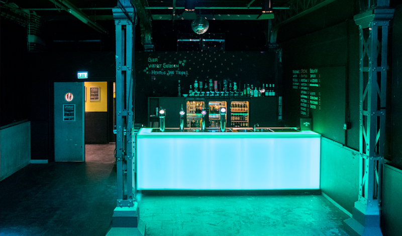

BLYATSQUAD
Let the Russian Hard-bass enter Den Bosch!
- Dag
- vrijdag
- Begin
- 00:00
- Einde
- 02:00
- Soort
- Party
- Locatie
- Willem Twee
- Plek
- Kleine Zaal
BLYATSQUAD
Dj BLYATSQUAD draait geheel in thema Russian hard-bass om jou in je trainingspakkie los te laten gaan!
Tijdens het Russische themafesst MOSHKAUW kan Russian Hard-bass natuurlijk niet ontbreken! De trend waait het laatste jaar via YouTube vanuit Rusland over naar Nederland. De heren speelden al in Tsjechië, Frankrijk en België, maar zijn ook regelmatig in Nederland te vinden, zoals bij het hard-bass event Tri Poloski TivoliVredenburg. Vanavond staan ze achter de knoppen om Den Bosch voor het eerst aan te steken met het hard-bass virus. Dus trek je Adidas tracksuit aan en kom naar de Kleine zaal van Willem Twee!


 Willem Twee
Willem Twee

Grote Zaal Kleine Zaal Spiegelzaal Kunstruimte Kelder
In de Willem Twee fabriek werden vroeger sigaren gemaakt, maar nu beeldende kunst, grafiek, film en muziek!

"Als je naar de Willem Twee fabriek komt ben je de sigaar: de artiesten daar grijpen je direct bij de strot, en laten je niet meer los. Dat werkt nogal verslavend, je wil er niet meer van weg… Pas op dat de rest van het programma niet in rook voor je op gaat!"
Kleine Zaal

Willem Twee poppodium heeft twee zalen: een grote en een kleine. In de kleine zaal is er iedere vrijdag ruimte voor lokale bands bij On The House.
Ook de vrijdag van RAUWKOST staat in het teken van On the House, dit keer in het genre 'indie', geprogrammeerd door rauwdouwer Pascale Paanakker. Op zaterdag kun je er terecht voor de hardere bands.
Waar dan?